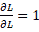
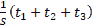
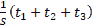
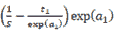
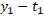

soft max-with-Loss图层的计算图
下图是Softmax-with-Loss层的计算图，并获得了反向传播。我们将把softmax函数称为Softmax层，把交叉熵误差称为交叉熵误差层，把这两个层结合起来称为Softmax-with-Loss层。您可以使用图A.1 中提供的计算图来表示Softmax-with-Loss层:熵:
图a . 1:soft max-with-Loss层的计算图
图A.1 所示的计算图，假设有一个神经网络对三类进行分类。来自前一层的输入为(a1，a2，a3)，Softmax层输出为(y1，y2，y3)。标签是(t1，t2，t3)并且交叉熵误差层输出损失l。
本附录显示，Softmax-with-Loss层的反向传播结果将为(y1 t1，y2 T2，y3 T3)，如图图A.1 所示。
正向传播
图A.1 所示的计算图没有显示Softmax层和交叉熵误差层的细节。这里，我们将从描述两层的细节开始。
首先，我们来看看Softmax层。我们可以用下面的等式来表示softmax函数:
|
(建议1) |
因此，我们可以用图A.2 中提供的计算图显示Softmax层。这里，S代表指数的和，也就是等式(A.1)中的分母。最终输出为(y1，y2，y3)。
图a . 2:soft max层的计算图(仅向前传播)
接下来，我们来看看交叉熵误差层。下面的等式显示了交叉熵误差:
|
(建议2) |
基于等式(A.2)，我们可以绘制交叉熵误差层的计算图，如图图A.3 所示。
图A.3 所示的计算图只是将方程(A. 2)作为计算图。因此，我认为这没有什么特别难的。
图A.3:交叉熵误差层的计算图(仅向前传播)
现在，让我们看看反向传播:
反向传播
首先，让我们看看交叉熵误差层的反向传播。我们可以画出交叉熵误差层的反向传播如下:
图A.4:交叉熵误差层的反向传播
请注意以下事项，以获得此计算图的向后传播:
- 反向传播的初始值(图A.4 中反向传播最右边的值)为1(因为)。
- 对于“x”节点的后向传播，前向传播的输入信号的“反转值”乘以来自上游的导数，被传递到下游。
- 对于“+”节点，来自上游的导数被传递而不改变它。
- “log”节点的反向传播遵循以下等式:

基于此，我们可以很容易地获得交叉熵误差层的反向传播。结果，值 将是Softmax层的向后传播的输入。
将是Softmax层的向后传播的输入。
接下来，让我们看看Softmax层的反向传播。因为Softmax层有点复杂，所以我想一步一步地检查它的反向传播:
第一步:
图A.5:步骤1
反向传播的值来自前一层(交叉熵误差层)。
第二步:
图A.6:步骤2
“x”节点“反转”乘法的正向传播值。这里，执行以下计算:
|
(建议3) |
第三步:
图A.7:步骤3
如果流在前向传播中分支为多个值，则在后向传播中会将分离的值相加。因此，这里增加了三个单独的反向传播值 。对附加值进行 / 的反向传播，得到。这里，( t 1， t 2， t 3)是标签，也是一个“独热向量”一个热向量意味着( t 1， t 2， t 3)中的一个为1，其他的都为0。因此，( t 1， t 2， t 3)之和为1。
。对附加值进行 / 的反向传播，得到。这里，( t 1， t 2， t 3)是标签，也是一个“独热向量”一个热向量意味着( t 1， t 2， t 3)中的一个为1，其他的都为0。因此，( t 1， t 2， t 3)之和为1。
第四步:
图A.8:步骤4
“+”节点只传递值而不改变它。
第五步:
图A.9:步骤5
“x”节点“反转”乘法的值。这里， 用于转换方程。
用于转换方程。
第六步:
图A.10:步骤6
在“exp”节点中，以下等式成立:
|
|
(建议4) |

因此，乘以exp(a1)的两个独立输入之和就是要获得的反向传播。我们可以把这个写成，变换后得到。因此，在正向传播的输入为 的节点中，反向传播为
的节点中，反向传播为 。对于
。对于 和
和 ，我们可以使用相同的程序(结果分别为
，我们可以使用相同的程序(结果分别为 和
和 )。有了这个，很容易说明，即使我们想分类n个类而不是三个类，我们也能达到同样的结果。
)。有了这个，很容易说明，即使我们想分类n个类而不是三个类，我们也能达到同样的结果。
总结
这里，详细示出了Softmax-with-Loss层的计算图，并获得了它的反向传播。图A.11 显示了Softmax-with-Loss层的完整计算图:
图a . 11:soft max-with-Loss层的计算图
图A.11 所示的计算图看起来很复杂。然而，如果你使用计算图一步一步地前进，获得导数(反向传播的过程)将会少得多。当您遇到看起来复杂的图层(如批处理规范化图层)，而不是此处描述的Softmax-with-Loss图层时，您可以使用此过程。这在实践中会比只看方程更容易理解。